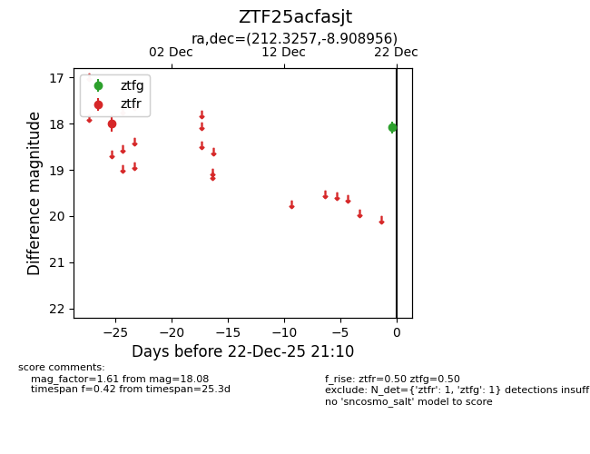
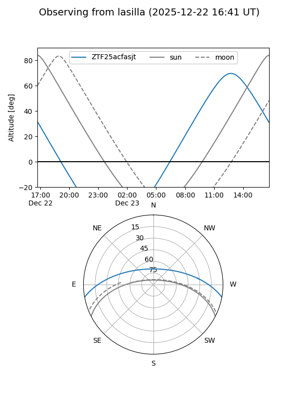
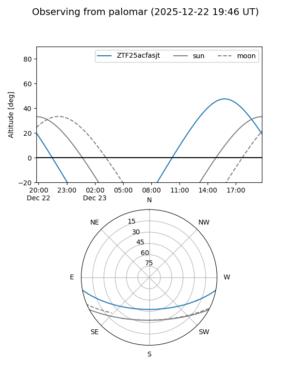

ZTF25acfasjt
Target ZTF25acfasjt at 2025-12-22 21:11
Aliases and brokers:
FINK: fink-portal.org/ZTF25acfasjt
Lasair: lasair-ztf.lsst.ac.uk/objects/ZTF25acfasjt
ALeRCE: alerce.online/object/ZTF25acfasjt
alt names
ZTF25acfasjt (ztf,fink_ztf)
Coordinates:
equatorial (ra, dec) = 212.3257,-8.90896
equatorial (HMS+DMS) = 14:09:18.18,-08:54:32.24
galactic (l, b) = (333.2697,+49.32117)
Flags:
Photometry:
last ztfg=18.08, ztfr=17.99
1 ztfg, 1 ztfr detections
Lightcurve

Visibility


Additional plots